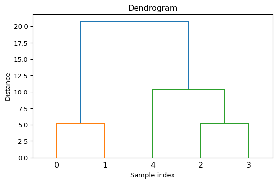

# You can import directly from the website (instead of downloading it..)
import pandas as pd
url = 'http://www.mghassany.com/MLcourseEfrei/datasets/ligue1_17_18.csv'
ligue1 = pd.read_csv(url, index_col=0, sep=";")Lab on \(k\)-means and Hierarchical clustering
- You are free to apply this lab in
r fontawesome::fa("r-project", fill ="steelblue")or Python. - In Python, you can use
sklearn.clustermodule in which you can find the most famous clustering techniques. For this lab, we can useKMeans()andAgglomerativeClustering()orlinkage. You can read the interesting documentation here.
In this lab, we will use the dataset Ligue1 2017/2018.
1. Download the dataset: Ligue1 2017/2018 🔢 and import it to your session. Be aware that the teams’ names are in the first column. You can use the index_col argument in pandas.
2. Print the first two rows of the dataset and the total number of features in this dataset.
Tip
In Python, you can create a nicely formatted HTML table directly from a pandas DataFrame using the .to_html() method, or even more conveniently with display(ligue1.iloc[:5, :5]) inside a Jupyter/Quarto notebook. Give it a try and see the result in your report!
pointsCards
3. We will first consider a smaller dataset to easily understand the results of \(k\)-means. Create a new dataset in which you consider only Points and Yellow.cards from the original dataset. Name it pointsCards.
4. Apply \(k\)-means on pointsCards. Choose \(k=2\) clusters and put the number of initialisations (n_init) to 20. Store your results into km. (Remark: KMeans() uses a random initialization of the clusters, so results may vary from one call to another. Use random_state to have reproducible outputs).
5. Print and describe what is inside km. Explore useful attributes such as km.labels_, km.cluster_centers_, km.inertia_, and km.n_iter_.
6. What are the coordinates of the centers of the clusters (called also prototypes or centroids)?
7. Plot the data (Yellow.cards vs Points). Color the points corresponding to their cluster.
8. Bonus: Add to the previous plot the cluster centroids and the names of the observations.
9. Re-run \(k\)-means on pointsCards using 3 and 4 clusters and store the results into km3 and km4 respectively. Visualize the results like in questions 7 and 8.
Important
How many clusters \(k\) do we need in practice? There is not a single answer: the advice is to try several and compare. Inspecting the inertia (within-cluster sum of squares) or the between_SS / total_SS ratio for a good trade-off between the number of clusters and the percentage of total variation explained usually gives a good starting point for deciding on \(k\) (a criterion similar to PCA’s explained variance).
A popular approach is the Elbow Method: plot the inertia against \(k\) and look for the “elbow” point where gains diminish.
10. Visualize the “within-groups sum of squares” (inertia) of the \(k\)-means clustering results across different values of \(k\).

import numpy as np
mydata = pointsCards
wss = []
for i in range(1, 16):
km_i = KMeans(n_clusters=i, n_init=20, random_state=42)
km_i.fit(mydata)
wss.append(km_i.inertia_)
plt.figure(figsize=(8, 5))
plt.plot(range(1, 16), wss, marker="o")
plt.xlabel("Number of Clusters")
plt.ylabel("Within Groups Sum of Squares (Inertia)")
plt.title("Elbow Method")
plt.xticks(range(1, 16))
plt.show()11. Bonus: Modify the code of the previous question to visualize the between_SS / total_SS ratio. Interpret the results.
Tip
In scikit-learn, KMeans does not directly expose betweenss and totalss. However, you can compute them as follows:
- Total SS = sum of squared distances of all points from the global mean =
np.sum((X - X.mean())**2) - Within SS =
km.inertia_ - Between SS = Total SS − Within SS
Ligue 1
So far, you have only taken the information of two variables for performing clustering. Now you will apply KMeans() on the original dataset ligue1. Using PCA, we can visualize the clustering performed with all the available variables in the dataset.
By default, KMeans() does not standardize the variables, which will affect the clustering result. As a consequence, the clustering of a dataset will be different if one variable is expressed in millions or in tenths. If you want to avoid this distortion, use StandardScaler to automatically center and standardize the dataset.
12. Apply PCA on the ligue1 dataset and store your results in pca_ligue1.
from sklearn.decomposition import PCA
from sklearn.preprocessing import StandardScaler
scaler = StandardScaler()
ligue1_scaled = pd.DataFrame(
scaler.fit_transform(ligue1),
index=ligue1.index,
columns=ligue1.columns
)
# Scaling is required before PCA to avoid variables with large ranges dominating.
# We apply PCA on the already-scaled dataset.
pca = PCA()
pca_ligue1 = pca.fit_transform(ligue1_scaled)
print("Explained variance ratio:", pca.explained_variance_ratio_)
Tip
In scikit-learn, PCA works on a numeric array. You should fit PCA on the scaled dataset to ensure all variables contribute equally. This is analogous to using cor = TRUE in R’s princomp().
13. Plot the observations and the variables on the first two principal components (biplot). Interpret the results.
14. Visualize the teams on the first two principal components and color them with respect to their cluster.
# You can use the following code, based on matplotlib and seaborn.
import seaborn as sns
palette = {0: "red", 1: "blue", 2: "green"}
colors = [palette[label] for label in km_ligue1_scaled.labels_]
fig, ax = plt.subplots(figsize=(10, 7))
ax.scatter(pca_ligue1[:, 0], pca_ligue1[:, 1], c=colors, s=80, zorder=2)
for i, team in enumerate(ligue1.index):
ax.annotate(team, (pca_ligue1[i, 0], pca_ligue1[i, 1]),
textcoords="offset points", xytext=(4, 4),
fontsize=7, color=colors[i])
ax.set_xlabel(f"PC1 ({pca.explained_variance_ratio_[0]*100:.1f}%)")
ax.set_ylabel(f"PC2 ({pca.explained_variance_ratio_[1]*100:.1f}%)")
ax.set_title("Clustering Plot — Ligue 1 2017/18 (All Variables, Visualized on PC1 & PC2)")
plt.tight_layout()
plt.show()15. Recall that the figure in question 14 is a visualization of the clustering done with all the variables projected onto PC1 and PC2, not a clustering done on PC1 and PC2 directly. Now apply KMeans() taking only the first two PCs as input. Visualize the results and compare with question 14.
Tip
By applying \(k\)-means only on the first two PCs we obtain different and less accurate results (since some information is discarded), but it is still an insightful approach for quick exploration.
Hierarchical clustering
Distances pdist()
To calculate distances in Python we use scipy.spatial.distance. Here is a tutorial on how to use it.
import numpy as np
from scipy.spatial.distance import pdist, squareform
# Generate a matrix M of values from 1 to 15 with 5 rows and 3 columns
M = np.arange(1, 16).reshape(5, 3)
print(M)[[ 1 2 3]
[ 4 5 6]
[ 7 8 9]
[10 11 12]
[13 14 15]]# - Compute the distance between rows of M.
# - The default distance is the Euclidean distance.
# - Since there are 3 columns, it is the Euclidean
# distance between three-dimensional points.
# squareform() converts the compact distance vector to a full matrix
D_matrix = squareform(pdist(M, metric="euclidean"))
print(np.round(D_matrix, 4))[[ 0. 5.1962 10.3923 15.5885 20.7846]
[ 5.1962 0. 5.1962 10.3923 15.5885]
[10.3923 5.1962 0. 5.1962 10.3923]
[15.5885 10.3923 5.1962 0. 5.1962]
[20.7846 15.5885 10.3923 5.1962 0. ]]
Tip
pdist() returns a condensed distance vector (upper triangle only, like R’s dist()). Wrap it in squareform() to get a full symmetric matrix. Both forms are accepted by linkage().
Dendrogram linkage()
from scipy.cluster.hierarchy import linkage, dendrogram
import matplotlib.pyplot as plt
# First, compute the linkage (dendrogram structure)
# Default method is 'single'; here we use 'complete' to mirror hclust()'s default
dendro = linkage(M, method="complete", metric="euclidean")
# Then plot it
plt.figure(figsize=(6, 4))
dendrogram(dendro)
plt.title("Dendrogram")
plt.xlabel("Sample index")
plt.ylabel("Distance")
plt.tight_layout()
plt.show()
Hierarchical clustering on Iris dataset

1. Download the iris dataset from here 🔢 and load it.
# You can also load it directly from sklearn
from sklearn.datasets import load_iris
import pandas as pd
iris_raw = load_iris(as_frame=True)
iris = iris_raw.frame
iris.columns = [*iris_raw.feature_names, "class"] # align column names
print(iris.head())2. Choose randomly 40 observations of the iris dataset and store the sample dataset into sampleiris.
3. Calculate the Euclidean distances between the flowers. Store the results in a condensed distance vector called D. (Remark: the last column of the dataset contains the class labels of the flowers.)
4. Construct a dendrogram on the sample iris dataset using the average linkage method. Store the result in dendro_avg.
5. Plot the dendrogram.
6. Plot the dendrogram again, this time labelling the leaves with the flower class names.
plt.figure(figsize=(14, 5))
dendrogram(
dendro_avg,
labels=sampleiris["class"].values, # equivalent to label=sampleiris$class
leaf_rotation=90,
leaf_font_size=8
)
plt.title("Hierarchical Clustering Dendrogram (Average Linkage)")
plt.xlabel("Flower class")
plt.ylabel("Distance")
plt.tight_layout()
plt.show()7. To cut the dendrogram and obtain a clustering, use fcluster(). You can choose the number of clusters you wish to obtain, or cut by specifying a height threshold from the dendrogram figure. Cut the dendrogram to obtain 3 clusters. Store the results into the vector groups_avg.
Tip
fcluster(..., t=3, criterion="maxclust") is the Python equivalent of R’s cutree(..., k=3). You can also cut by height with criterion="distance" and pass the height threshold as t.
8. Compare the results obtained with hierarchical clustering against the real class labels of the flowers (use pd.crosstab()). Interpret the results.
Bonus: You can interactively inspect a dendrogram in Python using Plotly. This is done in a fully interactive HTML widget:
import plotly.figure_factory as ff
fig = ff.create_dendrogram(
sampleiris.iloc[:, :-1].values,
orientation="bottom",
labels=sampleiris["class"].values,
linkagefun=lambda x: linkage(x, method="average")
)
fig.update_layout(title="Interactive Dendrogram (Average Linkage)")
fig.show()9. Now apply hierarchical clustering on the full iris dataset (all 150 observations). Choose 3 clusters and compare the results with the real class labels. Compare different linkage methods: average, complete, and single.
◼